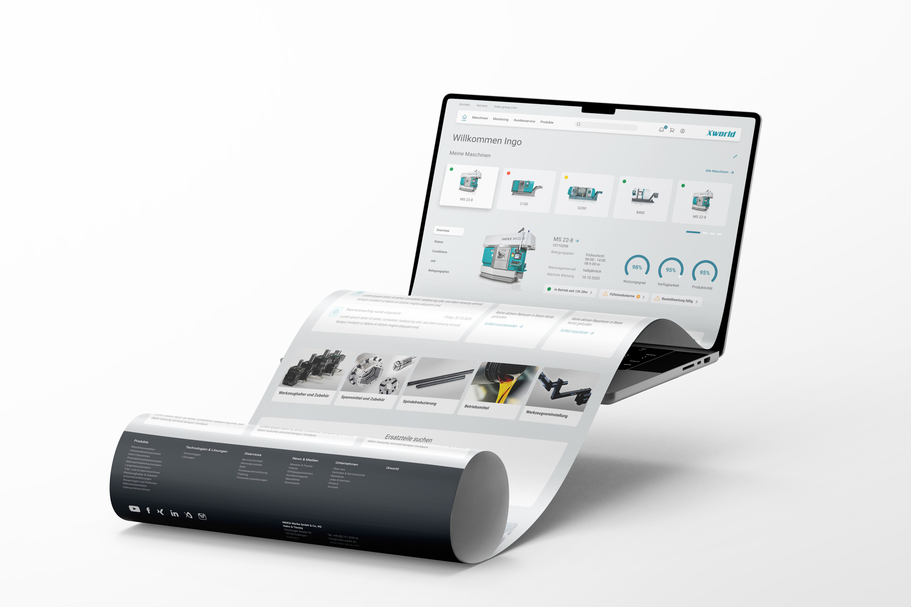
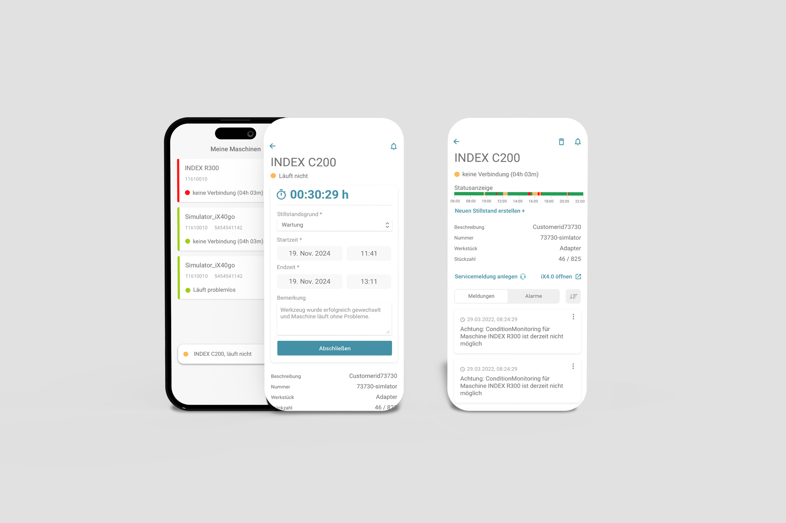

Machine management, eShop & expert tools. All in one portal.
INDEX-TRAUB, one of the world's leading manufacturers of CNC turning and milling machines, needed a digital platform where machine operators can manage, configure, monitor and order spare parts for their INDEX machines.
You buy machines. Then what?
Machine operators invest in high-end INDEX equipment but had no central digital hub to monitor their fleet, document downtime or order spare parts. Every process ran through separate channels.
Research, Workshops & UI Design
Responsible for research and client workshops within the UX team. Collaborative development of the UI design and style guide for the portal, mobile app and the expert tool CycletimePro.
One portal, three products, one entry point
The iXworld ecosystem bundles machine management, eShop and monitoring under one login. Additionally, the iXmobile app and CycletimePro were created as a dedicated expert solution for machine operators.
Five phases, three products.
From initial user research to Scrum delivery, each phase produced artefacts that drove the next decision. The image on the left changes as you scroll.





Three key questions as a compass.
Central questions arose: How does the machine operator work daily with their machines? What information is needed at the machine vs. at the desk? Where does the current system create friction?
Stakeholder workshops with PO, PL and management plus a heuristic evaluation of the existing systems formed the foundation. From this, personas were developed for three target groups: machine operators, maintenance managers and purchasing.
My Machines. Visibility at a glance.
The dashboard is the daily starting point. At a glance, the user sees all their INDEX machines with current operating status, utilisation rate and open action items, colour-coded, prioritised, no detours.
The machine detail page shows utilisation rate, maintenance interval, current workpiece and piece count, transmitted directly from the machine controller via iX4.0.
Artefact · Hi-Fi Dashboard · FigmaDepth without complexity.
Machine operators need to decide fast: is the machine still economically utilised? When is the next maintenance due? Are there open alarms? The detail view structures this information by urgency, from overview to spare-part recommendation.
Occupancy plans, status history and operation monitoring are designed as progressive disclosure: deep when needed, compact by default.
Thousands of items. Filtered by machine.
The integrated eShop gives machine operators direct access to the complete INDEX spare parts range, without media breaks, with machine-specific filtering. One click from the machine dashboard to the matching part.
3D views, technical data, availability and delivery times are consolidated on the Product Detail Page. New or repair, both bookable in one interface.
Document downtime from the shop floor.
Machine operators are rarely at a desk. The iXmobile app allows them to capture machine status and downtime directly at the machine, enter downtime reasons and trigger service requests.
The app is natively designed for iOS and Android and connects seamlessly to the iXworld portal. All data captured there flows into the dashboard in real time.
The ecosystem in pictures.
Hi-Fi Design · Figma
iXworld · Entry Dashboard with Machine Overview & Spare Parts Shop
Machine Detail · Occupancy Plan, Monitoring & Status History
iXshop · Product Detail with 3D View & Technical Data
iXmobile App · Machine Status, Downtime Tracking & Service Notifications
Testing & Delivery in motion.
Screen Recordings · 2023
Moderated sessions with machine operators and maintenance managers on mid-fi wireframes, conducted before the transition to hi-fi design.
Wireframe-Test · Mid-Fi Prototype · INDEX iXworld
The iXmobile app enables machine operators to capture downtime directly from the shop floor and trigger service notifications, without the detour via desktop.
Assembly Management · iXmobile App · INDEX iX40
One ecosystem, three products, one entry point.
What I'd carry forward.
What worked well
- Shop floor interviews: Direct conversations with machine operators at the machine, not in the meeting room, delivered the most important insights. The question "What annoys you daily?" opened more doors than any questionnaire.
- Wireframe testing before Hi-Fi: Two test rounds at Mid-Fi level prevented expensive corrections in Scrum. The pressure to jump to Hi-Fi was high, but the decision paid off.
- Parallel product development: Designing portal, app and CycletimePro in parallel created synergies: one shared design system, one unified interaction model.
What I'd change
- Earlier IoT briefing: The technical limits of the iX4.0 interface only became fully clear in Sprint 3. A technical briefing in week 1 would have sharpened design assumptions earlier.
- Quantitative baseline: The starting situation was only captured qualitatively. Measurable KPIs before launch would make the impact after go-live more tangible.
- Prioritise onboarding flow earlier: The question of how INDEX-TRAUB actively brings customers to the portal came too late into design. The adoption process deserved its own UX workstream.
CycletimePro. Cycle Time Calculator for Machine Operators.
Machine operators who directly set up INDEX machines need a tool that makes cycle time visually calculable. CycletimePro was created as a dedicated expert tool within the iXworld ecosystem.
The user creates a project, defines workpiece, machine and raw part, and sees in an interactive timeline view how main spindle, counter spindle, revolver and steady rest interact. All in one clear interface.